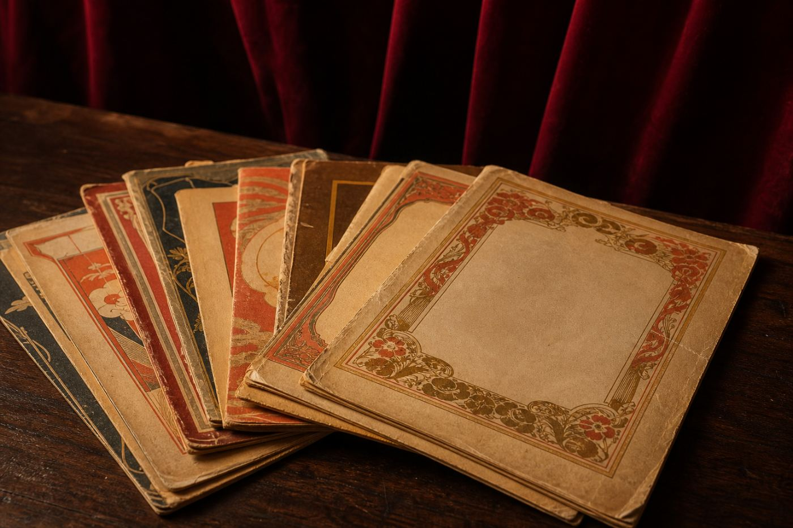
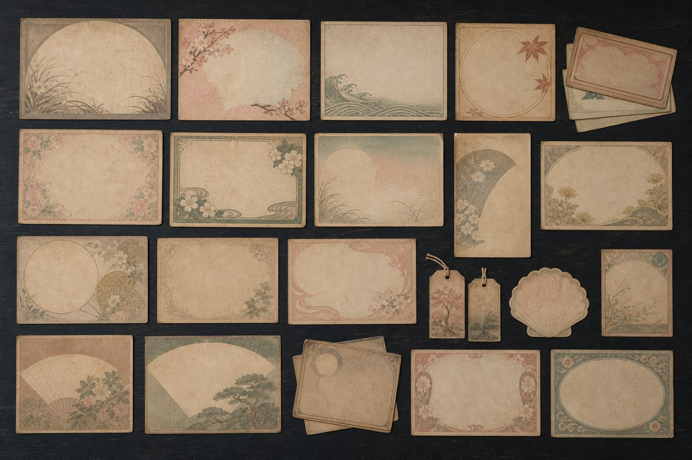

歌劇の本、一般古書、古本全般、美術関連書、映画関係等々。
カルチャー＆サブカルチャー。
劇団が発行してきた機関誌を扱っています。
大劇場ほか、東京、その他の劇場公演の脚本集など。
劇団関連のムック本や書籍など。
大正時代の創成期から戦前の文献等。
ポスター・絵葉書・主題歌集。
ご注文はFAXでも受付いたしますが、商品名と商品番号、ご連絡先を必ずご記入ください。


戦前の本や和本、絵葉書。
お問い合わせください。
市内への出張買取も承っております。買取もいたしておりますので、お問い合わせください。
| 店 名 | 古書 みなと堂 |
|---|---|
| 所在地 | 兵庫県神戸市中央区みなと町 1-2-3（要予約来店） |
| お問合せ | info@example.jp |
| 加 盟 | 兵庫県古書籍商業協同組合 |
| 取扱い | 歌劇の本／一般古書／古本全般／美術関連書／映画関係 |
即売会にも参加しています。
直近では、兵庫県古書会館（花隈）で開かれた神戸古書即売会に、8店の古書店とともに出品しました。
本のご相談・買取のお問い合わせは
info@example.jp
※このページは、レベルアップオペレーションズがお作りした見本です。店名・住所・メールアドレスはすべて架空のもので、実在する店舗ではありません。文章は、ご提案先のお店のホームページに書かれているものを使わせていただき、読みやすいように一部をこちらで書き足しています。掲載している写真はすべてイメージ写真です。